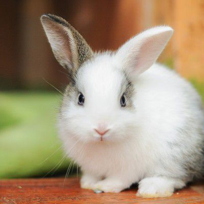

If you love pets...You'll love us!... SHOPY7
"The most widespread form of interspecies bonding occurs between humans and dogs" and the keeping of dogs as companions, particularly by elites, has a long history. Pet dog populations grew significantly after World War II as suburbanization increased. In the 1950s and 1960s, dogs were kept outside more often than they tend to be today(the expression "in the doghouse" - recorded since 1932- to describe exclusion from the group implies a distance between the doghouse and the home) and were still primarily functional, acting as a guard, children's playmate, or walking companion. From the 1980s, there have been changes in the pet dog's role, such as the increased role of dogs in the emotional support of their human guardians.
This article is about the species that is commonly kept as a pet. For the cat family,
"Cats" redirects here. For other uses, see Cats (disambiguation).
For technical reasons, "Cat #1" redirects here. For the album by Peter Criss.The cat (Felis catus) is a domestic species of small carnivorous mammal.[1][2] It is the only domesticated species in the family Felidae and is commonly referred to as the domestic cat or house cat to distinguish it from the wild members of the family.
Keeping pet birds can be very rewarding, but caring for them is quite a responsibility. Before you bring one home, there are a lot of details you need to know about. It's helpful to review how the various types of parrots and other bird species differ based on their personality, noise level, lifespan, and care requirements.
LoveToKnow's writers bring you information based their expertise and experience with keeping a wide variety of pet birds.


What is considered to be an exotic pet depends on context, but it is largely agreed upon that anything other than a domestic animal can be considered exotic. Different companies, people, state governments, and associations may all define what an exotic pet is slightly differently than one another. To some, a pet goat or a ferret is exotic but to others, only things like tigers and venomous snakes are exotic. What is ordinary for some people is not always ordinary for another. Within the veterinary community, exotic pets are typically considered anything that isn't a domestic dog, cat, or farm animal.